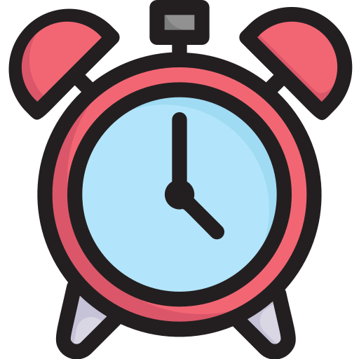

Habilidades:
HTML
CSS
JavaScript
PHP
MySQL

Design:
Feito com personalidade e com carinho, colocando meus aprendizados em prática, valorizando um design simples e limpo.
Desenvolvimento:
Front-end e Back-end. Tudo codificado do zero e pensado de forma que de vida e personalidade ao site.
Sobre mim
Nos últimos dez meses fiz um curso de Programação Web Full Stack. Aprendi ferramentas importantes para a criação de um site e hoje tenho um Github com vários repositórios que mostram minha evolução. Dentre todas as ferramentas, minha maior preferência foi com Front-end, ou seja, o design.
Soft Skills
Comunicação
Organização
